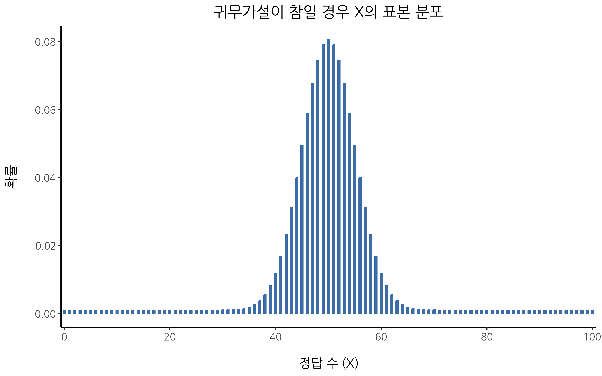
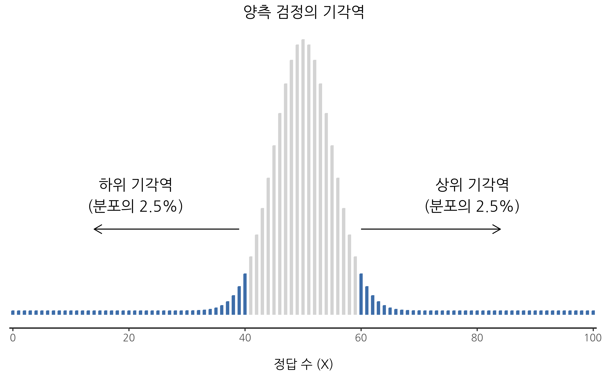
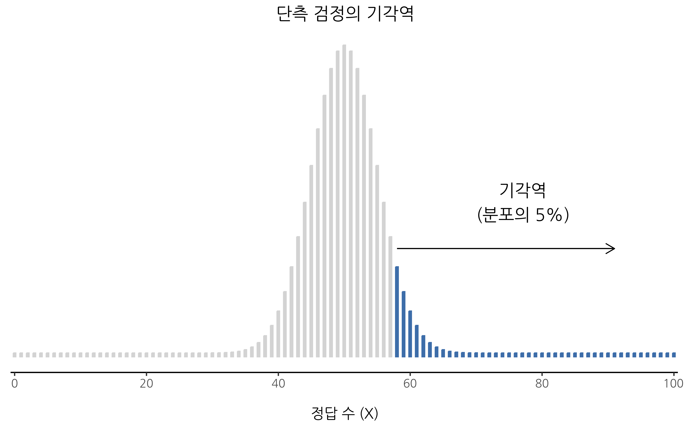
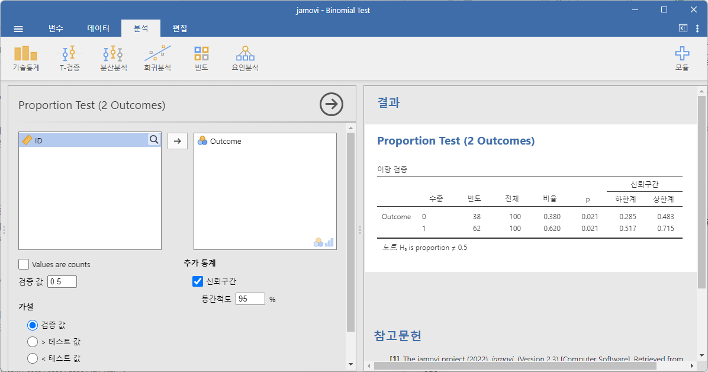
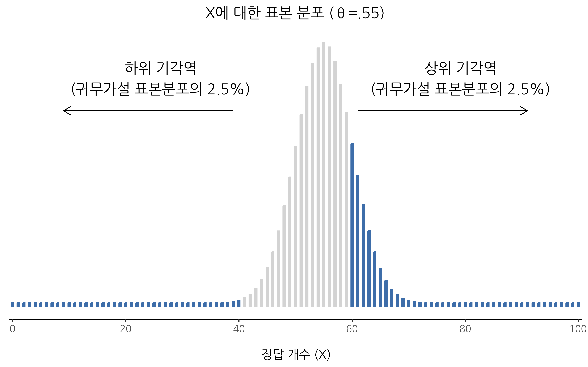
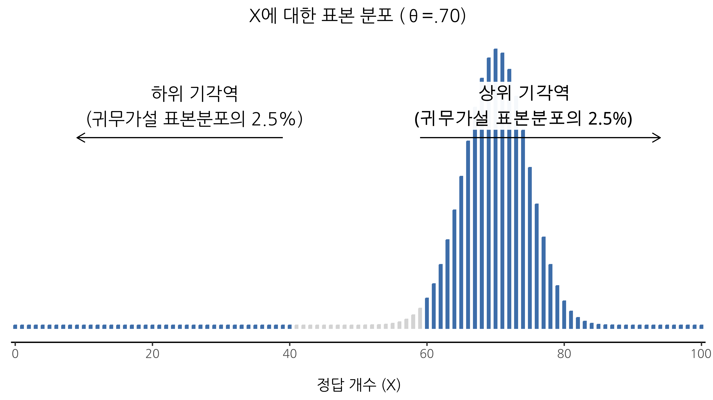
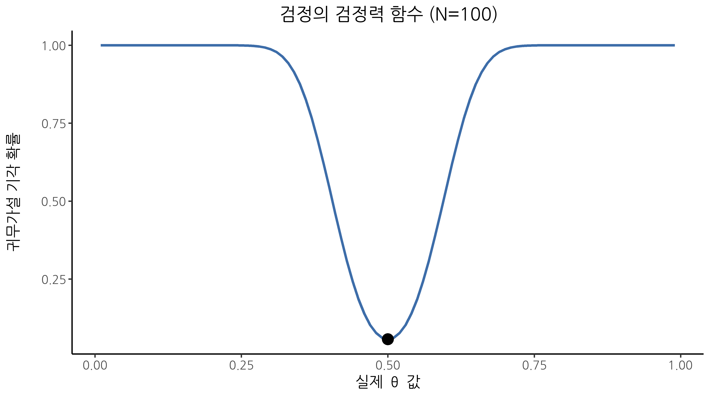
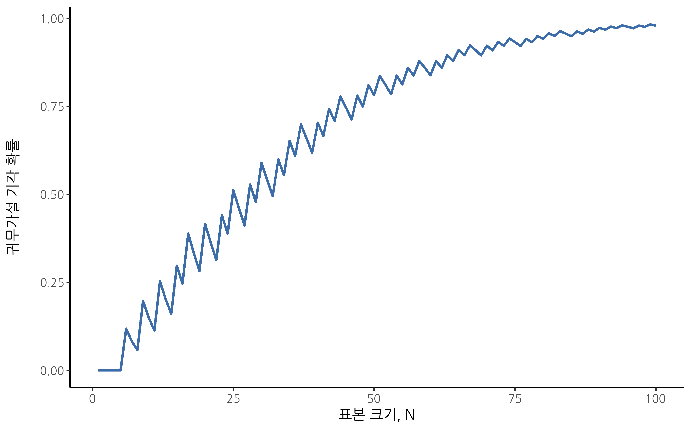

| 저자의 연구 가설: | \( ext{``}\)ESP가 존재한다\( ext{''}\) |
|---|---|
| 저자의 통계적 가설: | \( \theta \neq 0.5 \) |
9 가설 검정
귀납법의 과정은 우리의 경험과 조화를 이루도록 가장 단순한 법칙을 가정하는 과정이다. 그러나 이 과정은 논리적인 근거가 아니라 심리적인 근거만을 가진다. 가장 단순한 사건의 흐름이 실제로 일어날 것이라고 믿을 이유는 없다. 내일 태양이 뜰 것이라는 것도 하나의 가설일 뿐이며, 이는 우리가 태양이 뜰지 아닐지를 알지 못한다는 것을 의미한다.
– 루트비히 비트겐슈타인1
지난 장에서는 추론 통계의 두 가지 “큰 개념” 중 하나인 추정(estimation)에 대해 논의했습니다. 이제 다른 큰 개념인 가설 검정(hypothesis testing)으로 초점을 옮길 차례입니다. 가장 추상적인 형태에서 가설 검정은 사실 매우 단순한 개념입니다. 연구자가 세상에 대해 어떤 이론을 가지고 있고 데이터를 통해 그 이론이 실제로 뒷받침되는지를 확인하고자 한다는 것입니다. 하지만 세부 사항은 복잡하며, 많은 사람들이 가설 검정 이론을 통계학에서 가장 까다로운 부분으로 여깁니다. 이 장의 구성은 다음과 같습니다. 먼저, 간단한 예제를 사용하여 가설 검정이 어떻게 작동하는지를 상세히 설명하여 가설 검정이 어떻게 “구성”되는지를 보여주겠습니다. 이 과정에서 지나치게 교조주의적인 태도를 피하고, 대신 검정 절차의 근본적인 논리에 초점을 맞추려 합니다.2 이후에는 가설 검정 이론을 둘러싼 다양한 교의(dogmas), 규칙 및 이단적 견해에 대해 논의할 것입니다.
9.1 다양한 종류의 가설들
결국 우리 모두는 광기에 굴복하게 됩니다. 나에게 그날은 정교수로 승진하는 순간 찾아올 것입니다. 상아탑 속에서 종신직의 보호를 받으며, 마침내 나는 (말하자면) 제정신을 놓고 가장 비생산적인 심리학 연구 분야인 초감각적 지각(ESP)의 탐구에 몰두할 수 있게 될 것입니다.3
이제 이 멋진 날이 왔다고 가정해 봅시다. 나의 첫 번째 연구는 투시 능력이 존재하는지를 테스트하는 간단한 실험입니다. 각 참가자는 책상에 앉아 실험자가 보여주는 카드를 봅니다. 카드의 한쪽은 검은색, 다른 한쪽은 흰색입니다. 실험자는 카드를 인접한 방의 책상 위에 놓습니다. 카드는 완전히 무작위로 검은색 면 또는 흰색 면이 위로 향하도록 배치되며, 이 무작위화는 실험자가 참가자와 함께 있는 동안이 아니라, 참가자가 방을 떠난 후에 이루어집니다. 또 다른 실험자가 방에 들어가 참가자에게 현재 카드의 어느 면이 위를 향하고 있는지를 묻습니다. 이는 단 한 번만 수행되는 실험입니다. 각 참가자는 단 한 장의 카드를 투시하고 한 번만 답변을 합니다. 그리고 참가자는 정답을 아는 사람과 접촉하는 일이 전혀 없습니다. 따라서 내 데이터 세트는 매우 단순합니다. 나는 \(N\)명의 사람들에게 질문을 했고, 그중 \(X\)명이 정답을 맞혔습니다. 구체적인 수치를 들어 설명하자면, \(N = 100\)명의 참가자를 대상으로 실험을 했고, \(X = 62\)명이 정답을 맞혔다고 가정해 봅시다. 놀라울 정도로 높은 숫자이긴 하지만, 이것이 ESP의 증거를 발견했다고 주장하기에 충분할까요? 가설 검정은 이런 상황에서 유용합니다. 그러나 가설을 검정하는 방법을 논의하기 전에, 먼저 가설이 무엇을 의미하는지 명확히 할 필요가 있습니다.
9.1.1 연구 가설과 통계적 가설
우리가 첫 번째로 명확히 구분해야 하는 개념은 연구 가설과 통계적 가설의 차이입니다. ESP 연구에서 나의 궁극적인 과학적 목표는 투시 능력이 존재한다는 것을 입증하는 것입니다. 이러한 상황에서 나의 연구 목표는 명확합니다. 나는 ESP의 증거를 발견하기를 바라고 있습니다. 경우에 따라 연구자의 태도가 보다 중립적일 수도 있으며, 이 경우 연구 목표는 투시 능력이 존재하는지 여부를 규명하는 것이 됩니다. 어쨌든, 여기서 말하고자 하는 핵심은 연구 가설이란 본질적으로 실질적이며 검증 가능한 과학적 주장이라는 점입니다. 심리학자라면 연구 가설은 근본적으로 심리학적 개념과 관련됩니다. 다음은 연구 가설에 해당하는 예입니다:
- 음악을 들으면 다른 것에 주의를 기울이는 능력이 감소한다. 이 진술은 두 가지 심리학적으로 의미 있는 개념(음악 감상과 주의 집중) 사이의 인과 관계를 주장하는 것이므로 타당한 연구 가설입니다.
- 지능은 성격과 관련이 있다. 이 진술은 두 가지 심리학적 구성 개념(지능과 성격) 사이의 관계에 대한 주장입니다. 그러나 인과 관계가 아니라 상관 관계를 주장하는 점에서 위 가설보다는 약한 주장입니다.
- 지능이란 정보 처리의 속도이다. 이 가설은 앞의 두 가지와는 성격이 다릅니다. 관계에 대한 주장이 아니라 지능의 본질적 성격에 대한 존재론적 주장입니다. 보통 “X가 Y에 영향을 미치는가?”라는 형식의 연구 가설을 실험적으로 검증하는 것이 “X란 무엇인가?”라는 질문을 해결하는 것보다 훨씬 쉽습니다. 실질적으로 연구자들은 존재론적 주장에서 도출된 관계론적 주장을 검증하는 경우가 많습니다. 예를 들어, 만약 내가 지능이란 뇌의 정보 처리 속도라고 믿는다면, 나의 실험은 지능 측정치와 정보 처리의 속도 측정치 사이의 관계를 탐색하는 방식으로 설계될 것입니다. 결론적으로, 대부분의 일상적인 연구 질문은 본질에서 관계적인 경향을 띠지만, 연구 질문은 거의 대부분 세상의 본질에 대한 더 깊은 존재론적 질문에 의해 추동됩니다.
연구 가설은 때때로 상당히 복잡하게 얽혀 있을 수 있습니다. 예를 들어, ESP 연구에서 나의 궁극적인 목표는 “ESP가 존재한다”는 존재론적 주장을 검증하는 것일 수 있지만, 실험적으로는 “일부 사람들이 투시 능력을 가지고 있다”라는 보다 구체적인 가설을 설정할 수도 있습니다. 그렇다고 해서 모든 것이 연구 가설로 인정되는 것은 아닙니다. 의미 있는 연구 가설로 보기 어려운 몇 가지 예를 들어봅시다.
- 사랑은 전쟁터다. 이 진술은 너무 모호해서 검증할 수 없습니다. 연구 가설이 어느 정도의 모호함을 가질 수는 있지만, 이론적 아이디어를 실행 가능한 방식으로 구체화할 수 있어야 합니다. 어쩌면 내가 충분히 창의적이지 않아서 그런지 모르겠지만, 이를 구체적인 연구 설계로 변환하는 방법을 전혀 떠올릴 수 없습니다. 그렇다면 이것은 과학적 연구 가설이 아니라 그냥 팝송 가사에 불과합니다. 그렇다고 해서 이 주제가 흥미롭지 않다는 것은 아닙니다. 인간이 가진 많은 깊은 질문들이 이 범주에 속합니다. 언젠가 과학이 사랑에 대해 검증 가능한 이론을 구성하거나 신의 존재를 시험할 수 있을지도 모릅니다. 하지만 지금은 불가능하며, 그런 날이 올 것이라고 기대하지도 않습니다.
- 동어반복 클럽의 첫 번째 규칙은 동어반복 클럽의 첫 번째 규칙이다. 이 진술은 실질적인 주장이 아닙니다. 항상 참인 문장일 뿐입니다. 현실 세계의 어떤 상태도 이 주장과 모순될 수 없습니다. 우리는 이를 반증 불가능한 가설이라고 부르며, 따라서 이 주장은 과학의 영역 밖에 있습니다. 과학에서 무엇을 주장하든 간에, 그 주장은 틀릴 가능성이 있어야 합니다.
- 내 실험에서 “예”라고 말하는 사람이 “아니오”라고 말하는 사람보다 많을 것이다. 이 진술도 연구 가설로 볼 수 없습니다. 이는 심리학적 현상에 대한 주장이라기보다는 단순히 데이터에 대한 주장일 뿐입니다(물론 연구 질문 자체가 사람들이 “예”라고 말하는 편향을 가지는지 여부라면 예외가 될 수 있습니다). 사실, 이 가설은 연구 가설이라기보다는 통계적 가설에 더 가까워 보입니다.
보는 바와 같이, 연구 가설은 때때로 다소 복잡할 수 있으며, 본질적으로 과학적 주장입니다. 통계적 가설은 전혀 다른 개념입니다. 통계적 가설은 수학적으로 정확해야 하며, 데이터 생성 메커니즘(즉, “모집단”)의 특정 특성에 대한 구체적인 주장이어야 합니다. 그렇다 하더라도, 통계적 가설은 연구자가 관심을 가지는 실질적인 연구 가설과 명확한 관계를 가져야 합니다. 예를 들어, 내 ESP 연구에서 연구 가설은 “어떤 사람들은 벽을 통해 사물을 볼 수 있다”는 것입니다. 나는 이를 데이터가 생산되는 방식에 대한 명확한 진술로 변환하고자 합니다. 그렇다면 그 진술은 어떤 방식이어야 할까요? 실험에서 내가 관심을 가지는 양은 \(P(correct)\), 즉 참가자들이 정답을 맞힐 확률입니다. 이 확률을 나타내기 위해 그리스 문자 \(\theta\)(theta)를 사용합시다. 다음은 네 가지 다른 통계적 가설입니다.
- ESP가 존재하지 않으며 실험이 잘 설계되었다면 참가자들은 단순히 무작위로 추측할 것입니다. 따라서 정답을 맞힐 확률은 \(\theta=0.5\)일 것입니다.
- 반대로 ESP가 존재하고 참가자들이 카드를 볼 수 있다면, 정답률은 우연보다 높을 것이므로 통계적 가설은 \(\theta > 0.5\)가 됩니다.
- 또 다른 가능성으로, ESP가 존재하지만 색상이 모두 반대로 보이고 사람들이 이를 인식하지 못하는 경우를 가정해 봅시다(조금 황당하지만, 가능성을 배제할 수는 없습니다). 이 경우 참가자들의 정답률은 우연보다 낮을 것이며, 이는 \(\theta < 0.5\)라는 통계적 가설에 대응됩니다.
- 마지막으로, ESP가 존재하지만 참가자들이 올바른 색상을 보고 있는지, 반대로 보고 있는지 알 수 없는 경우를 생각해 봅시다. 이 경우 우리가 데이터에 대해 주장할 수 있는 유일한 것은 정답을 맞힐 확률이 0.5와 다르다는 것입니다. 이는 \(\theta \neq 0.5\)라는 통계적 가설에 해당합니다.
이 모든 것은 적법한 통계적 가설입니다 왜냐하면 모집단의 모수에 대한 진술이면서 내 실험과 의미 있게 연결되어 있기 때문입니다.
이 논의에서 내가 분명하게 말하고자 하는 것은, 통계적 가설 검정을 수행할 때 연구자는 두 가지 별개의 가설을 고려해야 한다는 점입니다. 먼저 연구 가설(심리학적 주장)이 있어야 하고, 이는 다시 통계적 가설(데이터 생성 모집단에 대한 주장)로 연결되어야 합니다. 내 ESP 연구에서 이 관계는 Table 9.1 같이 나타낼 수 있습니다.
그리고 여기서 핵심적으로 인식해야 할 점은 다음과 같습니다. 통계적 가설 검정은 연구 가설이 아니라 통계적 가설을 검정하는 것입니다. 연구 설계가 잘못되었다면 연구 가설과 통계적 가설 간의 연결이 끊어집니다. 예를 들어, 만약 내 ESP 연구에서 참가자가 창문에 반사된 카드를 볼 수 있는 환경에서 실험이 수행되었다면, 아마도 \(\theta \neq 0.5\)라는 강력한 데이터적 증거를 찾을 수 있을 것입니다. 그러나 이것이 “ESP가 존재하는가?”라는 연구 가설에 대해서는 아무것도 알려주지 못할 것입니다.
9.1.2 귀무가설과 대립가설
지금까지는 순조롭습니다. 저는 세상에 대해 믿고 싶은 바와 일치하는 연구 가설을 가지고 있고, 이를 데이터가 생성된 방식에 대한 나의 믿음과 일치하는 통계적 가설로 연결하였습니다. 이 지점에서 많은 사람들의 직관에 다소 반하는 일이 벌어집니다. 왜냐하면 지금부터 제가 할 일은 제가 믿고 싶은 것과는 정반대에 해당하는 새로운 통계적 가설(귀무가설(null hypothesis), \(H_0\))4을 만들어내고, 실제로 관심 있는 것(이제는 대립가설(alternative hypthesis), \(H_1\)이라 부를 것입니다)을 거의 무시한 채 오로지 귀무가설에 집중할 것이기 때문입니다.
우리의 초감각적 지각(ESP) 예제에서, 귀무가설은 \(\theta = 0.5\)입니다. 이는 만약 ESP가 존재하지 않는다면 기대할 수 있는 것입니다. 물론 저는 ESP가 완전히 실재하기를 바라므로, 이 귀무가설의 대립가설은 \(\theta \neq 0.5\)가 됩니다. 본질적으로 여기서 우리가 하는 일은 \(\theta\)의 가능한 값을 두 그룹으로 나누는 것입니다. 즉, 제가 진실이 아니길 바라는 값들(귀무가설)과, 실제로 맞다면 기쁠 값들(대립가설)로 나누는 것이죠.
이렇게 구분한 후에 중요한 점은, 가설 검정의 목표가 대립가설이 (아마도) 참임을 보여주는 것이 아니라는 것입니다. 가설 검정의 목표는 귀무가설이 (아마도) 거짓임을 보여주는 것입니다. 대부분의 사람들은 이것이 꽤 이상하게 느껴집니다.
제 경험상, 이 개념을 가장 잘 이해하는 방법은 가설 검정을 형사 재판5에 비유하는 것입니다. 귀무가설의 재판이라고 할 수 있죠. 귀무가설은 피고인이고, 연구자는 검사이며, 통계적 검정 자체는 판사 역할을 합니다. 형사 재판과 마찬가지로 무죄 추정의 원칙이 적용됩니다. 즉, 연구자인 여러분이 합리적 의심을 넘어 귀무가설이 거짓임을 입증하지 못하는 한, 귀무가설은 참으로 간주됩니다.
여러분은 실험을 자유롭게 설계할 수 있으며(물론 합리적인 범위 내에서!), 그 목표는 데이터가 귀무가설이라는 범죄(즉, 거짓임)에 대해 유죄 판결을 이끌어낼 가능성을 극대화하는 것입니다. 그러나 한 가지 함정이 있습니다. 바로 통계적 검정이 재판의 규칙을 정하고, 이 규칙들은 귀무가설을 보호하도록 설계되어 있으며, 특히 귀무가설이 실제로 참일 경우 잘못된 유죄 판결의 가능성을 낮게 유지하도록 보장합니다. 이는 매우 중요한 부분입니다. 결국 귀무가설에는 변호사가 없고, 연구자가 이를 거짓으로 입증하려고 필사적으로 노력하는 상황에서 누군가는 귀무가설을 보호해야 하기 때문입니다.
9.2 두 가지 오류 유형
통계적 검정이 어떻게 구성되는지에 대한 세부 사항으로 들어가기 전에, 그 철학적 배경을 이해하는 것이 유용합니다. 저는 이전에 귀무가설 검정과 형사 재판의 유사성을 언급하며 이를 암시했지만, 이제는 명확한 설명이 필요합니다. 이상적으로는 우리가 절대 오류를 범하지 않는 검정을 구성하고 싶지만, 현실 세계는 복잡하기 때문에 이것은 불가능합니다. 때때로 단순히 운이 나쁠 수도 있습니다. 예를 들어, 동전을 10번 던졌는데 모두 앞면이 나왔다고 가정해 봅시다. 이는 동전이 편향되었다는 강한 증거처럼 보이지만, 실제로 공정한 동전이라 해도 이런 결과가 나올 확률은 1/1024입니다. 즉, 현실에서는 우리가 실수를 저지를 가능성을 받아들여야 합니다. 따라서 통계적 가설 검정의 목표는 오류를 제거하는 것이 아니라, 이를 최소화하는 것입니다.
이 시점에서 “오류”가 무엇을 의미하는지 좀 더 정확히 정의해야 합니다. 먼저, 명확한 사실을 진술하겠습니다. 귀무가설은 참이거나 거짓이며, 우리의 검정은 귀무가설을 유지하거나 기각하게 됩니다.6 따라서 Table 9.2 가 보여주듯이, 검정을 수행하고 결정을 내린 후에는 네 가지 경우 중 하나가 발생할 수 있습니다.
| \( H_0 \) 유지 | \( H_0 \) 기각 | |
|---|---|---|
| \( H_0 \) 참 | 올바른 결정 | 오류 (1종 오류) |
| \( H_0 \) 거짓 | 오류 (2종 오류) | 올바른 결정 |
결과적으로 여기에는 두 가지 다른 유형의 오류가 존재합니다. 실제로 참인 귀무가설을 기각하면 제1종 오류(Type I error)를 범한 것입니다. 반대로 실제로 거짓인 귀무가설을 유지하면 제2종 오류(Type II error)를 범한 것입니다.
통계적 검정이 형사 재판과 비슷하다고 말한 것을 기억하시나요? 정말 그렇습니다. 형사 재판에서는 피고가 유죄임을 “합리적 의심의 여지 없이” 입증해야 합니다. 모든 증거 규칙은 (이론적으로는) 무고한 피고가 잘못 유죄 판결을 받지 않도록 보장하기 위해 설계되어 있습니다. 재판은 피고인의 권리를 보호하기 위해 존재하며, 영국 법학자 윌리엄 블랙스톤(William Blackstone)은 “한 명의 무고한 사람이 고통받느니 열 명의 유죄자가 놓여나는 것이 낫다”고 말했습니다. 즉, 형사 재판은 두 가지 유형의 오류를 동일하게 취급하지 않습니다. 무고한 사람을 처벌하는 것이 유죄자를 놓치는 것보다 훨씬 더 나쁘게 여겨집니다. 통계적 검정도 이와 비슷합니다. 검정의 가장 중요한 설계 원칙은 제1종 오류의 확률을 통제하고 이를 일정한 확률 이하로 유지하는 것입니다. 이 확률은 \(\alpha\)로 표시되며, 유의수준(significance level)이라고 불립니다. 이 개념이 전체 검정 설계의 중심이므로 다시 한 번 강조하겠습니다. 가설 검정은 제1종 오류율이 \(\alpha\)를 초과하지 않으면 가설 검정의 유의수준이 \(\alpha\)라고 합니다.
그렇다면 제2종 오류율은 어떨까요? 당연히 이것도 통제하고 싶습니다. 이 확률은 \(\beta\)로 표시됩니다. 그러나 실제로는 제2종 오류율보다는 검정력(power)에 더 자주 주목합니다. 검정력은 실제로 거짓인 귀무가설을 기각할 확률을 의미하며, 이는 \(1 - \beta\)입니다. 이를 명확히 하기 위해 동일한 표를 다시 제시하되, 관련 수치를 추가했습니다(Table 9.3).
| \( H_0 \) 유지 | \( H_0 \) 기각 | |
|---|---|---|
| \( H_0 \) 참 | \(1 - \alpha\) (올바른 유지 확률) | \(\alpha\) (1종 오류율) |
| \( H_0 \) 거짓 | \(\beta\) (2종 오류율) | \(1 - \beta\) (검정력) |
강력한 검정(powerful hypothesis test)이란 \(\alpha\)를 원하는 (작은) 수준으로 유지하면서도 \(\beta\)를 작게 유지하는 검정을 의미합니다. 관례적으로 과학자들은 세 가지 다른 유의수준 \(\alpha\)을 사용합니다: 0.05, 0.01, 0.001입니다. 여기에 비대칭성이 있다는 점에 주목하세요. 검정은 \(\alpha\) 수준을 작게 유지하도록 설계되어 있지만, \(\beta\)에 대한 보장은 없습니다. 물론 제2종 오류율도 작게 유지하고 싶으며 이를 위해 검정을 설계하려고 노력하지만, 이는 일반적으로 제1종 오류율을 통제하는 것보다 덜 중요하게 여겨집니다. 만약 블랙스톤이 통계학자였다면 이렇게 말했을지도 모릅니다. “참인 귀무가설을 하나 기각하는 것보다 거짓인 귀무가설 열 개를 유지하는 것이 낫다.” 솔직히 말하면, 저는 이 철학에 전적으로 동의하지 않습니다. 이러한 접근법이 타당한 상황도 있고, 그렇지 않은 상황도 있다고 생각합니다. 하지만 중요한 것은 이 방식이 검정이 설계된 방식이라는 점입니다.
9.3 검정 통계량과 표본 분포
이제 가설 검정이 어떻게 구성되는지에 대해 구체적으로 이야기해야 할 시점입니다. 이를 위해 ESP 실험 예제로 돌아가 보겠습니다. 잠시 실제 데이터를 무시하고 실험의 구조에 대해 생각해 보겠습니다. 실제 숫자가 무엇이든 관계없이 데이터의 형태는 \(N\)명의 사람 중 \(X\)명이 숨겨진 카드의 색상을 정확히 맞혔다는 것입니다. 또한, 잠시 동안 귀무가설이 실제로 참이라고 가정해 보겠습니다. 즉, ESP가 존재하지 않으며, 누군가가 올바른 색상을 선택할 확률이 정확히 \(\theta = 0.5\)라고 가정합니다. 그렇다면 데이터는 어떤 모습일까요? 분명히, 올바른 답을 한 사람의 비율이 대략 50%에 가까울 것으로 예상됩니다. 수학적으로 표현하면, \(\frac{X}{N}\)이 대략 0.5라고 말할 수 있습니다.
물론 이 비율이 정확히 0.5일 것이라고 기대하지는 않습니다. 예를 들어, \(N = 100\)명을 테스트했을 때 \(X = 53\)명이 맞혔다면, 이 데이터는 귀무가설과 상당히 일치한다고 볼 수 있습니다. 반면에 \(X = 99\)명이 맞혔다면 귀무가설이 틀렸다고 확신할 수 있을 것입니다. 마찬가지로 단 3명만 맞혔다면 비슷하게 귀무가설이 틀렸다고 확신할 수 있을 것입니다.
이제 좀 더 기술적으로 접근해 보겠습니다. 우리는 데이터로부터 계산할 수 있는 \(X\)라는 값을 가지고 있습니다. 이 \(X\)의 값을 보고 귀무가설이 맞는지 여부를 판단하거나 대립가설을 지지할지를 결정합니다. 이러한 결정을 내리는 데 사용하는 계산값을 검정 통계량(test statistic)이라고 합니다.
검정 통계량을 선택한 후의 다음 단계는 어떤 값에서 귀무가설을 기각하게 할지, 어떤 값에서 귀무가설을 유지하게 할지 정확히 정의해야 합니다. 이를 위해서는 귀무가설이 참일 때 검정 통계량의 표본 분포(sampling distribution)가 어떻게 되는지를 알아야 합니다. (이전에 Section 8.3.1 에서 표본 분포에 대해 설명한 바 있습니다.)
왜 이것이 필요할까요? 이 분포는 귀무가설이 참일 경우 \(X\)가 어떤 값을 가질 것인지를 정확히 알려줍니다. 따라서 이 분포를 이용해 귀무가설이 실제 데이터에 어라나 부합되는지를 평가할 수 있습니다.
검정 통계량의 표본 분포를 어떻게 결정할까요? 많은 가설 검정에서는 이 과정이 꽤 복잡합니다. 이 책의 후반부에서는 일부 검정에 대해 이 과정을 약간 얼버무리는 설명을 할 수도 있습니다(솔직히 일부는 저도 완전히 이해하지 못합니다). 그러나 때로는 매우 간단한 경우도 있습니다. 다행히도 ESP 예제는 가장 간단한 경우 중 하나입니다.
모집단의 모수 \(\theta\)는 사람들이 질문에 올바르게 답할 확률이며, 검정 통계량 \(X\)는 샘플 크기 \(N\) 중 정답을 맞힌 사람의 수입니다. 이러한 분포는 Section 7.4 에서 본 적이 있으며, 이는 바로 이항 분포입니다. 해당 절에서 소개한 표기법과 용어를 사용하면 귀무가설은 \(X\)가 이항 분포를 따른다고 예측합니다:
\[X \sim Binomial(\theta,N)\]
귀무가설이 \(\theta = 0.5\)라고 가정하고, 실험의 샘플 크기가 \(N = 100\)명일 경우 필요한 표본 분포를 얻을 수 있습니다. 이 표본 분포는 Figure 9.1 에 나타나 있습니다. 놀랍지도 않게, 귀무가설은 \(X = 50\)이 가장 가능성이 높은 결과라고 말합니다. 또한 40에서 60 사이의 정답 수가 나올 가능성이 매우 높다고 예측합니다.
9.4 의사결정 내리기
이제 거의 다 끝났습니다. 우리는 검정 통계량 \(X\)를 구성했으며, 이 값이 \(\frac{N}{2}\)에 가까우면 귀무가설을 유지하고, 그렇지 않으면 기각해야 한다는 점에 대해 꽤 확신을 가지고 있습니다. 이제 남은 질문은 다음과 같습니다. 정확히 어떤 검정 통계량 값을 귀무가설과 관련시키고, 어떤 값을 대립가설과 관련시켜야 할까요?
예를 들어, ESP 연구에서 \(X = 62\)라는 값을 관찰했습니다. 이제 어떤 결정을 내려야 할까요? 귀무가설을 믿어야 할까요, 아니면 대립가설을 지지해야 할까요?

9.4.1 기각역과 임계값
앞의 질문에 답하기 위해서는 검정 통계량 \(X\)의 기각역(critical region) 개념을 소개해야 합니다. 검정의 기각역은 귀무가설을 기각하게 되는 \(X\)의 값들을 의미하며, 이 때문에 기각역을 기각 영역(rejection region)이라고 부르기도 합니다. 그렇다면 이 기각역은 어떻게 찾을 수 있을까요? 다음과 같은 점들을 고려해 보겠습니다.
- 귀무가설을 기각하기 위해서는 \(X\)가 매우 크거나 매우 작아야 합니다.
- 귀무가설이 참일 경우, \(X\)의 표본 분포는 \(Binomial(0.5, N)\)입니다.
- 유의수준 \(\alpha = 0.05\)일 때, 기각역은 이 표본 분포의 5%를 포함해야 합니다.
이 마지막 점을 이해하는 것이 중요합니다. 기각역은 귀무가설을 기각하게 되는 \(X\)의 값들에 해당하며, 표본 분포는 귀무가설이 실제로 참일 때 특정 \(X\) 값일 확률입니다. 이제 만약 기각역이 표본 분포의 20%를 차지하도록 선택했다고 가정해 보겠습니다. 그러면 귀무가설이 실제로 참이라면 귀무가설을 잘못 기각할 확률은 얼마일까요? 답은 당연히 20%입니다. 따라서 이는 유의수준 \(\alpha = 0.2\)인 검정을 설계한 것이 됩니다. 우리가 원하는 유의수준이 \(\alpha = 0.05\)라면, 기각역은 검정 통계량의 표본 분포에서 5%만을 차지해야 합니다.
이러한 세 가지 조건이 문제를 명확히 해결해 줍니다. 우리의 기각역은 분포의 가장 극단적인 값들, 즉 꼬리(tails) 부분으로 구성됩니다. 이는 Figure 9.2 에서 시각적으로 설명됩니다. 유의수준 \(\alpha = 0.05\)를 원할 경우, 기각역은 \(X \leq 40\) 및 \(X \geq 60\)에 해당합니다.7 즉, “참”을 응답한 사람 수가 41에서 59 사이에 있으면 귀무가설을 유지해야 합니다. 만약 이 수가 \(0\)에서 \(40\) 사이이거나 \(60\)에서 \(100\) 사이에 있다면 귀무가설을 기각해야 합니다. 이때 \(40\)과 \(60\)을 임계값(critical values)이라 하는데, 임계값은 기각역의 경계값입니다.

이제 가설 검정은 사실상 완료되었습니다:
- 유의수준 \(\alpha\)를 선택합니다 (예: \(\alpha = 0.05\).
- 귀무가설 \(H_0\)과 대립가설 \(H_1\)을 비교하는 데 적절한 검정 통계량(예: \(X\))을 선택합니다.
- 귀무가설이 참이라는 가정 하에 검정 통계량의 표본 분포(이 경우 이항 분포)를 구합니다.
- 적절한 유의수준을 만족하는 기각역(0–40 및 60–100)을 계산합니다.
이제 실제 데이터(예: \(X = 62\))에 대한 검정 통계량 값을 계산하고, 이를 임계값과 비교하여 결론을 내리기만 하면 됩니다. \(62\)는 임계값 \(60\)보다 크므로 귀무가설을 기각하게 됩니다. 다시 말해, 이 검정은 통계적으로 유의한(significant) 결과를 도출했다고 할 수 있습니다.
9.4.2 통계적 “유의성”에 대한 주의사항
다른 신비주의 점술 기법들과 마찬가지로, 통계적 방법 또한 비전문가들이 그 기법을 이해하지 못하도록 의도적으로 만들어진 특유의 전문용어를 사용한다.
– G. O. Ashley의 말로 전해짐8
이 시점에서 “유의한(significant)”이라는 단어에 대해 잠시 짚고 넘어가야 합니다. 통계적 유의성(statistical significance)이라는 개념은 사실 매우 단순하지만, 불행히도 이름이 좋지 않습니다. 데이터가 귀무가설을 기각할 수 있게 해준다면, 우리는 “결과가 통계적으로 유의하다(statistically significant)”고 말하며, 이를 줄여서 단순히 “유의한(significant) 결과”라고 표현하기도 합니다. 이 용어는 꽤 오래된 것으로, 당시에는 “유의한(significant)”이 단순히 “표시된(indicated)” 정도의 의미로 사용되었습니다. 그러나 현대에는 이 단어가 “중요한(important)”에 더 가까운 의미로 받아들여지고 있습니다. 이로 인해 많은 현대 독자들이 통계학을 처음 배울 때 혼란을 겪게 됩니다. “유의한 결과”라면 반드시 중요한 결과일 것이라고 생각하기 때문입니다. 하지만 전혀 그렇지 않습니다. “통계적으로 유의하다”는 말은 단지 데이터가 귀무가설을 기각할 수 있었음을 의미할 뿐입니다. 이 결과가 실제로 중요한지는 전혀 별개의 문제이며, 이는 여러 가지 다른 요소에 달려 있습니다.
9.4.3 단측 검정과 양측 검정의 차이
지금까지 구성한 가설 검정에 대해 한 가지 더 짚고 넘어가야 할 부분이 있습니다. 제가 사용한 통계적 가설을 살펴보면:
\[H_0: \theta=0.5\]
\[H_1:\theta \neq 0.5\]
대립가설(alternative hypothesis)이 \(\theta < 0.5\)인 경우와 \(\theta > 0.5\)인 경우 모두를 포함하고 있다는 것을 알 수 있습니다. 이는 초감각적 지각(ESP)이 우연 이상의 성과를 낼 수도 있고, 우연보다 못한 성과를 낼 수도 있다고 생각하는 경우에 타당합니다(실제로 그렇게 생각하는 사람들도 있습니다). 통계 용어로 이것을 양측 검정(two-sided test) 이라고 부릅니다. 이렇게 부르는 이유는 대립가설이 귀무가설의 양 “측면”을 모두 포함하기 때문이며, 그 결과 검정의 기각역은 표본 분포의 양쪽 꼬리 부분을 포함하게 됩니다(유의수준 \(\alpha\)가 0.05일 경우 각각 2.5%씩). 이는 앞서 Figure 9.2 에서 설명한 바 있습니다.
그러나 이것이 유일한 방법은 아닙니다. 만약 제가 ESP가 오직 우연 이상의 성과를 낼 때만 믿을 수 있다고 생각한다면, 대립가설은 \(\theta > 0.5\)인 경우만을 포함하게 됩니다. 이 경우 귀무가설은 다음과 같이 바뀝니다:
\[H_0: \theta \leq 0.5\]
\[H_1: \theta > 0.5\]
이러한 경우를 단측 검정(one-sided test) 이라고 하며, 기각역은 표본 분포의 한쪽 꼬리만을 포함하게 됩니다. 이는 Figure 9.3 에 설명되어 있습니다.

9.5 가설 검정의 \(p\)-값
어떤 의미에서 우리의 가설 검정은 이미 완료되었습니다. 우리는 검정 통계량을 구성했고, 귀무가설이 참일 경우의 표본 분포를 파악한 후, 검정의 기각역을 설정했습니다. 그럼에도 불구하고 사실상 가장 중요한 수치인 \(p\)-값을 아직 다루지 않았습니다. 이제 이 주제를 살펴보겠습니다. \(p\)-값을 해석하는 방법에는 두 가지가 있으며, 하나는 로널드 피셔(Sir Ronald Fisher)가, 다른 하나는 예지 네이만(Jerzy Neyman)이 제안한 것입니다. 두 가지 방법 모두 정당하며, 가설 검정을 바라보는 매우 다른 사고방식을 반영합니다. 대부분의 입문 교재는 피셔의 해석만을 소개하는 경향이 있지만, 이는 다소 아쉬운 일입니다. 제 생각에는 네이만의 해석이 더 간결하고, 실제로 귀무가설 검정의 논리를 더 잘 반영한다고 봅니다. 그러나 여러분의 생각은 다를 수 있으므로 두 가지 해석을 모두 포함했습니다. 먼저 네이만의 해석부터 시작하겠습니다.
9.5.1 의사결정에 대한 유연한 관점
앞서 설명한 가설 검정 절차의 한 가지 문제점은 결과가 “가까스로 유의한” 경우와 “매우 유의한” 경우를 전혀 구분하지 않는다는 점입니다. 예를 들어, 제가 수행한 ESP 연구에서 얻은 데이터가 겨우 기각역에 들어갔기 때문에 유의한 효과를 얻긴 했지만, 상당히 아슬아슬했다고 합시다. 반면, \(N = 100\)명의 참가자 중 \(X = 97\)명이 정답을 맞춘 연구를 수행했다고 가정해 봅시다. 이 경우 역시 유의한 결과를 얻겠지만, 훨씬 큰 차이로 유의하므로 이에 대한 모호함이 전혀 없을 것입니다. 제가 설명한 절차에서는 이 둘을 구분하지 않습니다. 허용 가능한 제1종 오류율로 \(\alpha = .05\)를 채택하는 표준 관행을 따르면, 이 두 경우 모두 유의한 결과로 간주됩니다.
이러한 상황에서 \(p\)-값이 유용합니다. 이를 이해하기 위해, 동일한 데이터 세트에 대해 다양한 \(\alpha\) 값을 사용하여 여러 번 가설 검정을 수행했다고 가정해 봅시다. 원래의 ESP 데이터에 대해 그렇게 하면 Table 9.4 같은 결과를 얻게 됩니다.
| \( \alpha \) 값 | 0.05 | 0.04 | 0.03 | 0.02 | 0.01 |
|---|---|---|---|---|---|
| 귀무가설 기각? | 예 | 예 | 예 | 아니오 | 아니오 |
ESP 데이터(\(X = 62\) 성공, \(N = 100\) 관찰)를 검정할 때, \(\alpha\) 수준이 \(.03\) 이상인 경우 항상 귀무가설을 기각하게 됩니다. 반면, \(\alpha\) 수준이 \(.02\) 이하인 경우에는 항상 귀무가설을 유지하게 됩니다. 따라서 이 데이터에 대해 귀무가설을 기각할 수 있는 가장 작은 \(\alpha\) 값이 \(.02\)와 \(.03\) 사이 어딘가에 있습니다. 이것이 바로 \(p\)-값입니다. 실제로 ESP 데이터의 \(p\)-값은 \(p = .021\)입니다. 요약하자면, \(p\)는 귀무가설을 기각하기 위해 허용해야 하는 가장 작은 제1종 오류율(\(\alpha\))로 정의됩니다.
만약 \(p\)가 나타내는 오류율이 감내하기 어려운 수준이라면 귀무가설을 유지해야 합니다. 반대로 \(p\) 수준의 오류율을 감수할 수 있다면 귀무가설을 기각하고 대립가설을 지지하는 것이 정당화됩니다.
실질적으로 \(p\)는 모든 가능한 \(\alpha\) 값에 대한 가설 검정 결과를 요약한 것입니다. 이로 인해 우리의 의사결정 과정이 보다 “유연해지는” 효과가 있습니다. \(p \le \alpha\)인 검정에서는 귀무가설을 기각하고, \(p > \alpha\)인 검정에서는 귀무가설을 유지하게 됩니다. 제 ESP 연구에서는 \(X = 62\)를 얻었고, 그 결과 \(p = .021\)이 도출되었습니다. 따라서 감수해야 하는 오류율은 \(2.1\%\)입니다. 반면, 실험 결과가 \(X = 97\)이었다면 어떻게 될까요? 이번에는 \(p\)-값이 \(p = 1.36 \times 10^{-25}\)로 줄어듭니다. 이는 매우, 매우 작은9 제1종 오류율입니다. 두 번째 경우에서는 약 10자(10조의 조배)분의 \(1\) 수준의 제1종 오류율만 감수하면 되므로, 훨씬 더 높은 확신을 가지고 귀무가설을 기각할 수 있습니다.
9.5.2 극단적 데이터 발생의 확률
\(p\)-값의 두 번째 정의는 로널드 피셔 경(Sir Ronald Fisher)으로부터 비롯되었으며, 실제로 대부분의 통계학 입문 교과서에서 이 정의를 볼 수 있습니다. 기각역(critical region)을 구성할 때, 그것이 표본 분포의 꼬리 부분(즉, 극단적인 값들)에 해당한다는 것을 눈치채셨나요? 이는 우연이 아닙니다. 거의 모든 “좋은” 가설 검정은 이러한 특성을 가지고 있습니다(여기서 “좋은”은 제2종 오류율 \(\beta\)를 최소화하는 의미입니다). 그 이유는 좋은 기각역이란 대개 귀무가설이 참일 때 관찰될 가능성이 가장 낮은 검정 통계량의 값들에 해당되기 때문입니다. 이 규칙이 성립한다면, 우리는 \(p\)-값을 검정 통계량이 실제로 관찰한 값이나 그보다 더 극단적인 값을 관찰할 확률로 정의할 수 있습니다. 다시 말해, (\(p\)-값이 작다는 것은) 데이터가 귀무가설 하에서 극단적인 값이어서 나올 법하지 않으므로, 귀무가설이 틀렸을 가능성이 높다는 것입니다.
9.5.3 흔한 실수
이제 네이만의 가설 검정 접근법과 피셔의 접근법이라는 두 가지 상당히 다르지만 타당한 \(p\)-값 해석 방법이 있다는 것을 알았습니다. 불행히도, 특히 통계를 처음 배울 때 종종 제시되는 완전히 잘못된 세 번째 설명이 있습니다. 이 잘못된 접근법은 \(p\)-값을 “귀무가설이 참일 확률”로 해석하는 것입니다. 직관적으로 매력적인 생각일 수 있지만, 두 가지 핵심적인 측면에서 틀렸습니다.
첫째, 귀무가설 검정은 빈도주의자의 도구이며, 빈도주의 확률 접근법은 귀무가설에 확률을 부여하는 것을 허용하지 않습니다. 이 확률 개념에 따르면 귀무가설은 참이거나 거짓일 뿐이며, “5% 확률로 참이다”라고 말할 수 없습니다.
둘째, 가설에 확률을 부여할 수 있는 베이지안 접근법에서도, \(p\)-값은 귀무가설이 참일 확률에 해당하지 않습니다. 이 해석은 \(p\)-값이 계산되는 수학적 방식과 전혀 일치하지 않습니다. 직설적으로 말하자면, 이러한 방식으로 생각하는 것이 직관적으로 그럴듯해 보여도, \(p\)-값을 이렇게 해석할 어떠한 정당성도 없습니다. 절대 그렇게 하지 마세요.
9.6 가설 검정 결과 보고하기
가설 검정의 결과를 작성할 때는 일반적으로 여러 가지 정보를 보고해야 하지만, 어떤 검정을 수행했느냐에 따라 달라집니다. 이 책의 나머지 부분에서는 다양한 검정 결과를 보고하는 방법에 대해 다룰 것이므로(특히 자세한 예시는 Section 10.1.9 참고), 일반적으로 어떻게 작성하는지 감을 잡을 수 있을 것입니다. 하지만 어떤 검정을 수행하든 반드시 해야 할 한 가지는 \(p\)-값과 그 결과가 유의한지 여부를 언급하는 것입니다.
이것이 필요하다는 사실은 놀랍지 않을 것입니다. 이는 검정을 수행하는 핵심 목적이기 때문입니다. 다만, 논란이 될 수 있는 부분은 결과를 정확히 어떻게 보고해야 하는지에 대한 문제입니다. 귀무가설 검정의 전체적인 틀 자체에 반대하는 사람들을 제외하더라도, 검정에서 얻은 \(p\)-값을 그대로 보고해야 하는지, 아니면 사전에 선택한 유의수준 \(\alpha\)(예: \(p < .05\))만을 보고해야 하는지에 대한 논쟁이 존재합니다.
9.6.1 문제의 핵심
이것이 문제가 되는 이유를 이해하려면, \(p\)-값이 너무 편리한 개념이라는 점을 인식해야 합니다. 실제로, \(p\)-값을 계산할 수 있다는 사실은 검정을 수행하기 위해 사전에 특정한 \(\alpha\) 수준을 정할 필요가 없음을 의미합니다. 대신, \(p\)-값을 계산한 후 직접 해석하기만 하면 되비다. 예를 들어, \(p = .062\)라는 결과를 얻었다면, 귀무가설을 기각하기 위해서는 1종 오류율을 \(6.2\%\)까지 감수해야 한다는 의미입니다. 만약 개인적으로 \(6.2\%\)가 용납할 수 없는 수준이라고 생각한다면, 귀무가설을 유지하면 됩니다. 따라서, “실제 \(p\)-값을 보고하고, 독자가 허용 가능한 1종 오류 비율을 스스로 결정하도록 하면 되지 않을까?”라는 주장이 나옵니다. 이 접근법은 의사결정 과정을 “유연하게” 만드는 장점이 있습니다. 사실, 네이만의 \(p\)-값 정의를 받아들인다면, 이것이 바로 \(p\)-값의 핵심입니다. \(\alpha = .05\)라는 고정된 유의수준을 “채택”과 “기각”을 구분하는 경계선으로 설정할 필요가 없으며, 이로 인해 \(p = .051\)과 \(p = .049\)를 근본적으로 다르게 취급해야 하는 문제를 피할 수 있습니다.
이러한 유연성은 \(p\)-값의 장점이지만 단점이기도 합니다. 많은 사람들이 정확한 \(p\)-값을 보고하는 것을 선호하지 않는 이유는 연구자에게 지나치게 많은 자유를 부여하기 때문입니다. 특히, 데이터를 본 후에 허용할 수 있는 오류 허용 범위를 변경할 가능성을 열어두게 됩니다. 예를 들어, 내 ESP 실험을 생각해 보겠습니다. 만약 실험을 수행한 결과 \(p\)-값이 \(.09\)로 나왔다면, 나는 귀무가설을 기각해야 할까요, 아니면 채택해야 할까요? 사실, 나는 아직 내가 정말로 받아들일 수 있는 1종 오류 수준에 대해 깊이 생각해 보지 않았습니다. 이 주제에 대해 명확한 의견이 없습니다. 하지만 ESP가 존재하는지 여부에 대해서는 확실한 의견이 있으며, 내 연구가 신뢰할 수 있는 과학 저널에 게재될 수 있을지에 대해서도 분명한 입장이 있습니다. 놀랍게도, 데이터를 확인한 후에는 \(9\%\)의 오류율이 그리 나쁘지 않다고 생각되기 시작합니다. 특히, 내 실험이 실패했다고 인정하는 것이 얼마나 곤란한지를 고려하면 더욱 그렇습니다. 따라서, 사후적으로 결정을 내린 것처럼 보이지 않도록 하기 위해, 이제 나는 \(\alpha = .1\)이라고 선언합니다. 1종 오류율이 \(10\%\) 정도라면 나쁘지 않으며, 이 수준에서 내 검정 결과는 유의미하다는 주장을 펼칠 수 있습니다. 이렇게 하면 나는 내가 구하는 것을 얻을 것입니다.
즉, 문제는 연구자가 아무리 선한 의도를 가지고 정직한 사람이라 할지라도, 데이터를 본 후 결과를 조금이라도 조정하고 싶은 유혹이 강하다는 점입니다. 실험을 수행해 본 사람이라면 누구나 공감할 것입니다. 실험 과정은 길고 어려우며, 연구자는 자신의 가설에 깊이 애착을 가지게 됩니다. 따라서 실험이 원하는 결과를 내지 못했다는 사실을 인정하기 어려울 수 있습니다. 바로 이것이 문제입니다. “순수한” \(p\)-값을 사용하면, 연구자가 데이터가 실제로 말하는 내용이 아니라 자신이 믿고 싶은 방식으로 데이터를 해석하게 될 가능성이 높아집니다. 만약 이를 허용한다면, 과학을 수행하는 의미가 사라지지 않을까요? 그렇다면 사실과 관계없이 누구든 원하는 대로 믿도록 내버려 두는 것이나 마찬가지입니다. 물론, 이는 다소 극단적인 표현이지만, 이러한 우려가 있는 이유입니다. 이러한 관점에서는 반드시 사전에 \(\alpha\) 값을 설정하고, 검정 결과가 유의한지 여부만을 보고해야 합니다. 그래야만 연구자들이 정직함을 유지할 수 있습니다.
| 일반 표기 | 유의성 표시 | 해석 | 귀무가설 상태 |
|---|---|---|---|
| \( p \) > .05 | 유의하지 않음 | 유지됨 | |
| \( p \) < .05 | * | \( \alpha \) = .05에서는 유의하지만 \( \alpha \) = .01 또는 \( \alpha \) = .001에서는 유의하지 않음 | 기각됨 |
| \( p \) < .01 | ** | \( \alpha \) = .05 및 \( \alpha \) = .01에서는 유의하지만 \( \alpha \) = .001에서는 유의하지 않음 | 기각됨 |
| \( p \) < .001 | *** | 모든 수준에서 유의함 | 기각됨 |
9.6.2 두 가지 해결책
실제로 연구자가 사전에 단일 \(\alpha\) 수준을 지정하는 경우는 거의 없습니다. 대신, 과학자들은 일반적으로 \(.05\), \(.01\), \(.001\)의 세 가지 표준 유의수준을 사용합니다. 결과를 보고할 때, 이 중 어느 유의수준에서 귀무가설을 기각할 수 있는지를 표시합니다. 이는 Table 9.5 에 요약되어 있습니다. 이를 통해 조금 더 유연한 의사결정 규칙을 적용할 수 있으며, \(p < .01\)은 \(p < .05\)보다 더 강한 증거를 의미한다는 점을 반영할 수 있습니다. 이러한 수준들은 관례적으로 미리 정해져 있기 때문에, 연구자가 데이터를 본 후 \(\alpha\) 수준을 임의로 조정하는 것도 방지할 수 있습니다.
그럼에도 불구하고 많은 연구자들은 여전히 정확한 \(p\)-값을 보고하는 것을 선호합니다. \(p = .06\)을 어떻게 해석할지 독자가 직접 결정하도록 하는 것이 더 중요하다고 생각하는 경우도 많습니다. 하지만 실제로는, 정확한 \(p\)-값을 선호하는 연구자들조차도 작은 \(p\) 값에 대해서는 \(p < .001\)로 표기하는 경우가 많습니다. 이는 일부 소프트웨어(예: SPSS)가 \(p < .001\)일 때 \(p = .000\)으로 표시하는 등의 이유 때문이며, 아주 작은 \(p\)-값이 오해를 불러일으킬 수 있기 때문입니다. 현실적으로 어떤 통계 분석도 \(p < .001\)보다 더 강한 확신을 제공하기 어렵기 때문입니다. 즉, \(p < .001\)은 “이 검정에서 볼 때, 증거가 압도적이다”라는 의미로 받아들여집니다.
이 모든 점을 고려했을 때, 정확히 무엇을 해야 할지 궁금할 수 있습니다. 이 주제에 대한 의견은 상당히 상충됩니다. 어떤 사람들은 정확한 \(p\)-값을 보고해야 한다고 주장하는 반면, 다른 사람들은 Table 9.1 에서 설명한 계층적 접근 방식을 사용해야 한다고 주장합니다. 따라서 제가 줄 수 있는 가장 좋은 조언은 해당 분야에서 작성된 논문이나 보고서를 살펴보고 관례가 무엇인지 확인하는 것입니다. 일관된 패턴이 보이지 않는다면, 선호하는 방법을 사용하면 됩니다.
9.7 가설 검정 실행하기
이 시점에서 일부 사람들은 이것이 “실제” 가설 검정인지, 아니면 단순한 예제인지 궁금해할 수도 있습니다. 이는 실제 가설 검정입니다. 이전 논의에서 저는 가장 단순한 실제 사례를 설정하고 기본 원칙으로부터 검정을 구축했습니다. 그러나 이 검정은 이미 존재하는 것입니다. 이는 이항 검정(binomial test)이라고 불리며, jamovi에서 ‘빈도’ 메뉴를 눌러 사용할 수 있는 통계 분석입니다. 귀무가설을 검정하기 위해 성공 확률이 \(p = .5\)라는 가정하에,10 binomialtest.omv 데이터 파일에서 \(N = 100\)명 중 \(x = 62\)명이 올바른 응답을 한 데이터를 사용하여 분석하면, Figure 9.4 에 나타난 결과를 얻을 수 있습니다.

현재 이 출력은 다소 낯설게 보일 수 있지만, 기본적으로 올바른 정보를 제공하고 있음을 알 수 있습니다. 특히, \(p\)-값이 \(0.02\)로 일반적으로 선택되는 유의 수준 \(\alpha = .05\)보다 작기 때문에 귀무가설을 기각할 수 있습니다. 앞으로 이러한 출력 결과를 읽는 방법에 대해 더 자세히 설명할 것이며, 시간이 지나면 쉽게 이해하고 해석할 수 있게 될 것입니다.
실습: 이항 검정
이 실습을 하려면 Tip 3.1 을 수행하여 lsj-data 모듈이 설치되어 있어야 합니다.
‘파일’-‘열기’-’데이터 라이브러리’를 메뉴에서 선택합니다. 그러면 ’learning statistics with jamovi’라는 폴더가 보일 것입니다. 이 폴더를 선택합니다. 이미 이전 실습에서 이 폴더를 선택했으면 바로 이 폴더가 열릴 수도 있습니다.
데이터 라이브러리 목록에서 ’Binomial Test’를 선택합니다.
‘빈도’-’2 결과 이항 검증’을 선택합니다.
왼편의 ‘Propotion Test (2 Outcomes)’ 패널에서
Outcome를 ‘변수’ 상자에 넣습니다.‘검증 값’은 귀무가설 하에서의 성공 확률 \(\theta_0\)를 나타냅니다. 0.5로 설정되어 있는지 확인합니다. (’검증 값’은 ’Test value’의 잘못된 번역으로 ’검정 값’ 또는 ’테스트 값’이라고 해야 합니다.)
’가설’에서 대립가설의 종류를 선택합니다.
- ‘검증 값’은’\(\neq\) 검정 값’으로 표시되어야 하는데 번역 오류입니다. \(\theta \neq \theta_0\)의 대립가설을 사용하여 양측 검정을 합니다.
- ’> 테스트 값’은 \(\theta > \theta_0\)의 대립가설을 사용하여 오른쪽 단측 검정을 합니다.
- ’< 테스트 값’은 \(\theta < \theta_0\)의 대립가설을 사용하여 왼쪽 단측 검정을 합니다.
- 신뢰구간도 함께 살펴보기 위하여 ‘추가 통계’ 옵션의 ’신뢰구간’을 체크합니다.
그러면 Figure 9.4 같은 결과를 얻을 수 있습니다.
9.8 효과 크기, 표본 크기 및 검정력
이전 절에서 통계적 가설 검정의 주요 설계 원칙이 제1종 오류율을 제어하는 것임을 강조했습니다. 우리가 \(\alpha = .05\)로 설정하는 것은 참인 귀무가설 중 단 5%만이 잘못 기각되도록 하기 위한 시도입니다. 그러나 이것이 제2종 오류를 신경 쓰지 않는다는 의미는 아닙니다. 사실 연구자의 관점에서 보면, 귀무가설이 실제로 거짓임에도 불구하고 이를 기각하지 못하는 오류는 매우 성가신 문제입니다. 이를 염두에 두면 가설 검정의 이차적인 목표는 제2종 오류율 \(\beta\)를 최소화하는 것일 겁니다. 그러나 일반적으로는 제2종 오류를 최소화한다는 표현을 사용하지 않고, 검정력을 극대화한다는 표현을 사용합니다. 검정력은 \(1 - \beta\)로 정의되므로, 두 표현은 동일합니다.
9.8.1 검정력 함수

잠시 제2종 오류가 실제로 무엇인지 생각해 봅시다. 제2종 오류는 대립가설이 참임에도 불구하고 귀무가설을 기각하지 못하는 경우 발생합니다. 이상적으로는 제1종 오류율을 \(\alpha = .05\)로 설정할 수 있는 것처럼, 단일 숫자 \(\beta\)를 계산하여 제2종 오류율을 결정할 수 있으면 좋겠지만, 이 계산은 그보다는 훨씬 더 까다로운 문제입니다. 이를 이해하기 위해 ESP 연구에서 대립가설이 실제로 \(\theta\)의 다양한 값을 포함한다는 점을 생각해 보겠습니다. 즉, 대립가설은 \(\theta = 0.5\)를 제외한 모든 값을 포함합니다.
만약 실제로 정답을 선택할 확률이 55%라고 가정하면 (\(\theta = .55\)), \(X\)의 실제 표본 분포는 귀무가설이 예측하는 분포와 달라질 것입니다. 이제 100 개의 응답 중 \(X = 55\)의 정답이 가장 가능성이 높은 값이 됩니다. 뿐만 아니라, Figure 9.5 에서 보듯이 전체 표본 분포가 오른편으로 이동합니다. 한편, 기각역은 변하지 않습니다. 정의상 기각역은 귀무가설 하에서의 예측을 기반으로 하기 때문입니다. 귀무가설이 틀렸을 경우, 표본 분포에서 훨씬 더 많은 부분이 기각역에 포함됩니다. 즉, 귀무가설이 실제로 거짓일 때 귀무가설을 기각할 확률이 더 커지게 됩니다.
그러나 \(\theta = .55\)가 대립가설에 부합되는 유일한 값은 아닙니다. 만약 실제 \(\theta\) 값이 \(0.7\)이라면 어떻게 될까요? 이 경우의 표본 분포는 Figure 9.6 에서 볼 수 있듯이 거의 전 부분이 기각역에 포함됩니다. 따라서 \(\theta = 0.7\)일 때 귀무가설을 올바르게 기각할 확률(즉, 검정력)은 \(\theta = 0.55\)일 때보다 훨씬 커집니다. 즉, \(\theta = .55\)와 \(\theta = .70\)은 모두 대립가설에 속하지만, 제2종 오류율은 서로 다릅니다.


즉, 검정의 검정력(즉, \(1 - \beta\))은 실제 \(\theta\) 값에 따라 달라진다. 이를 설명하기 위해, 모든 \(\theta\) 값에 대한 귀무가설 기각 확률을 계산하여 Figure 9.7 에 나타냈다. 이 그래프는 보통 검정력 함수(power function)라고 불린다. 이 함수는 검정의 성능을 요약하는 좋은 지표로, 가능한 모든 \(\theta\) 값에 대한 검정력 \((1 - \beta)\)을 제공한다. 실제 \(\theta\) 값이 \(0.5\)에 가까울수록 검정력이 급격히 감소하지만, 멀어질수록 검정력은 커진다.
이것의 의미는 검정력(즉, \(1 - \beta\))이 실제 \(\theta\) 값에 따라 달라진다는 것입니다. 이를 설명하기 위해 모든 \(\theta\) 값에 대해 귀무가설을 기각할 확률을 계산하여 Figure 9.7 에 그래프로 나타냈습니다. 이 그래프는 보통 검정력 함수라고 불립니다. 이는 검정이 얼마나 효과적인지를 요약한 좋은 지표로, 모든 가능한 \(\theta\) 값에 대한 검정력 \((1 - \beta)\)를 보여줍니다. 그래프에서 볼 수 있듯이, 실제 \(\theta\) 값이 \(0.5\)에 가까울수록 검정력은 급격히 감소하지만, \(0.5\)에서 멀어질수록 검정력은 증가합니다.
9.8.2 효과 크기
모든 모형이란 틀린 것이기 때문에, 과학자는 무엇이 중요하게 틀렸는지에 주의해야 한다. 호랑이가 주위에 있는 상황에서 쥐를 걱정하는 것은 적절하지 않다.
– 조지 박스 (George Box) (Box, 1976, p. 792).
Figure 9.7 에 제시된 그래프는 가설 검정에 대한 기본적인 개념을 보여줍니다. 만약 실제 세계의 상태가 귀무가설이 예측하는 것과 매우 다르다면 검정력은 매우 높아집니다. 그러나 실제 상태가 귀무가설과 유사하지만 완전히 동일하지 않으면 검정력은 매우 낮아집니다. 따라서 실제 세계의 상태가 귀무가설과 얼마나 “유사한지”를 정량화할 수 있다면 유용할 것입니다. 이를 측정하는 통계량을 효과 크기(effect size)라는 척도입니다 (예: Cohen (1988); Ellis (2010)). 효과 크기는 상황에 따라 약간 다르게 정의되지만 (따라서 이 절에서는 일반적인 개념에 대해 설명합니다), 그것이 포착하려는 질적 개념은 항상 동일합니다 (예: Table 9.6 참조). 즉, 실제 모집단 모수와 귀무가설이 가정하는 모수 값 사이의 차이가 얼마나 큰가 하는 것입니다. ESP 예제를 사용하면, \(\theta_0 = 0.5\)가 귀무가설이 가정하는 값이고, \(\theta\)가 실제 값이라고 할 때, 효과 크기의 단순한 척도는 실제 값과 귀무가설 값의 차이 (즉, \(\theta - \theta_0\))나 이 차이의 절대값 \(\lvert \theta - \theta_0 \rvert\) 등이 될 수 있습니다.
| 큰 효과 크기 | 작은 효과 크기 | |
|---|---|---|
| 유의한 결과 | 차이가 있으며, 실용적으로 중요함 | 차이가 있지만, 흥미롭지 않을 수 있음 |
| 유의하지 않은 결과 | 효과 없음 | 효과 없음 |
효과 크기를 왜 계산할까요? 실험을 수행하고 데이터를 수집한 뒤, 가설 검정에서 유의한 효과를 얻었다고 가정해 봅시다. 단순히 유의한 효과가 있다고 말하는 것으로 충분하지 않을까요? 결국 가설 검정의 목적이 그것 아닌가요? 음, 그렇기도 하고 그렇지 않기도 합니다. 가설 검정을 수행하는 목적은 귀무가설이 틀렸음을 증명하려는 것이 맞습니다. 그러나 그것이 우리가 관심 있는 전부는 아닙니다. 만약 귀무가설이 \(\theta = 0.5\)라고 주장하고 우리가 그것이 틀렸다는 것을 보여주었다면, 이는 이야기의 절반만을 말한 것입니다. 귀무가설을 기각한다는 것은 \(\theta \neq 0.5\)라고 믿는다는 것을 의미하지만, \(\theta = 0.51\)과 \(\theta = 0.8\) 사이에는 큰 차이가 있습니다. 만약 \(\theta = 0.8\)이라는 결과가 나왔다면, 우리는 단순히 귀무가설이 틀렸다는 것뿐만 아니라, 그것이 매우 틀렸다는 것을 알게 됩니다. 반면, 귀무가설을 성공적으로 기각했지만 실제 값 \(\theta\)가 겨우 0.51이라면 (이는 아주 큰 규모의 연구에서만 가능할 것입니다), 귀무가설이 틀렸다는 것은 맞지만, 그 효과 크기가 너무 작아서 우리가 실제로 신경 쓸 필요가 있는지는 명확하지 않습니다.
ESP 연구 맥락에서는 어떤 형태로든 실제 초능력의 존재를 입증하는 것이 꽤 흥미로운 일이 될 수 있으므로 여전히 중요할 수 있습니다11. 그러나 다른 맥락에서는 \(1\%\)의 차이는 실제 차이라 하더라도 그다지 흥미롭지 않을 수 있습니다. 예를 들어, 남학생과 여학생 간의 고등학교 시험 점수 차이를 조사했을 때 여학생의 점수가 평균적으로 \(1\%\) 높게 나온다면, 수천 명의 학생 데이터를 가지고 있다면 이 차이는 거의 확실히 통계적으로 유의미할 것입니다. 하지만 \(p\)-값이 아무리 작더라도 이 차이는 그다지 흥미롭지 않습니다. 이렇게 작은 차이로 남학생 교육에 위기가 있다고 주장하고 싶으신가요? 바로 이런 이유로, 가설 검정 결과와 함께 표준화된 효과 크기 척도를 보고하는 것이 점점 더 표준이 되어가고 있습니다 (비록 천천히 진행되고 있지만). 가설 검정은 관찰된 효과가 실제인지 (즉, 단순한 우연이 아닌지) 여부를 알려주고, 효과 크기는 그것이 실제로 중요하거나 신경 쓸 가치가 있는지를 알려줍니다.
9.8.3 연구의 검정력 높이기
과학자들이 실험의 검정력을 극대화하는 데 집착하는 것은 놀랄 일이 아닙니다. 우리는 실험이 성공하기를 원하고, 따라서 귀무가설이 틀렸을 경우 이를 기각할 확률을 최대화하고 싶어 합니다. 앞서 본 것처럼 검정력에 영향을 주는 요소 중 하나는 효과 크기(effect size)입니다. 따라서 검정력을 높이기 위해 할 수 있는 첫 번째 일은 효과 크기를 키우는 것입니다. 실제로 이것이 의미하는 바는, 연구를 설계할 때 효과 크기를 증폭시킬 수 있는 방식으로 설계하라는 것입니다. 예를 들어, ESP 연구에서 나는 심령 능력이 조용하고 어둡고 방해 요소가 적은 방에서 가장 잘 발휘된다고 믿을 수 있습니다. 그렇다면 나는 그런 환경에서 실험을 진행하려고 할 것입니다. 만약 내가 어떤 식으로든 사람들의 ESP 능력을 강화할 수 있다면, 실제 값 \(\theta\)가 상승할 것이고12, 따라서 효과 크기도 더 커질 것입니다. 요약하자면, 영리한 실험 설계는 효과 크기를 변화시킬 수 있기 때문에 검정력을 높이는 한 가지 방법입니다.
안타깝게도, 최상의 실험 설계를 갖추었더라도 효과가 미미할 수 있습니다. 예를 들어, ESP가 실제로 존재하더라도 최적의 조건에서도 그 효과가 매우 미약할 수 있습니다. 이런 상황에서는 검정력을 높이는 가장 좋은 방법은 표본 크기(sample size)를 늘리는 것입니다. 일반적으로 관찰값이 많을수록 두 가설을 구별할 가능성이 높아집니다. 만약 내가 ESP 실험을 10명의 참가자와 진행했는데, 이 중 7명이 숨겨진 카드의 색을 맞췄다면 별로 인상 깊지 않을 것입니다. 하지만 10,000명의 참가자를 대상으로 진행했는데 7,000명이 정답을 맞췄다면, 내가 뭔가를 발견했다고 생각할 가능성이 훨씬 높아질 것입니다. 다시 말해, 표본 크기가 커질수록 검정력이 증가합니다. Figure 9.8 는 이러한 사실을 보여주고 있습니다. 이 그래프는 실제 모수 \(\theta = 0.7\)일 때, 표본 크기 \(N\)이 1에서 100까지 변화하는 동안의 검정력 변화를 나타냅니다. 여기서 귀무가설은 \(\theta_0 = 0.5\)라고 가정합니다.

검정력이 중요하기 때문에, 실험을 계획할 때 예상되는 검정력이 어느 정도일지 아는 것이 좋습니다. 물론 실제 효과 크기가 무엇인지 알 수 없기 때문에 정확히 아는 것은 불가능합니다. 그러나 때로는 (가끔은) 효과 크기가 얼마나 클지 추측할 수 있습니다. 그렇다면 필요한 표본 크기도 추정할 수 있습니다! 이러한 개념을 검정력 분석(power analysis)이라고 하며, 이러한 분석이 가능하다면 매우 유용한 도구가 됩니다. 분석을 통해 실험을 성공적으로 수행할 시간이나 예산이 충분한지 알 수 있습니다. 검정력 분석은 실험 설계의 필수 요소가 되어야 한다는 주장이 점점 더 많아지고 있으므로 알아둘 가치가 있습니다.
그러나 이 책에서는 검정력 분석에 대해 다루지 않습니다. 그 이유는 뻔한 이유와 본질적인 이유로 나뉩니다. 뻔한 이유는, 아직 검정력 분석에 대해 쓸 시간이 없었다는 것입니다. 본질적인 이유는, 제가 여전히 검정력 분석에 대해 약간 회의적이기 때문입니다. 연구자로서 저는 검정력 분석을 실제로 수행할 수 있는 상황에 거의 처해본 적이 없습니다. (a) 제 실험이 다소 비표준적이라 효과 크기를 제대로 정의할 수 없거나, (b) 효과 크기가 얼마나 될지 전혀 감이 없어서 결과를 해석할 수 없는 경우가 많았습니다. 게다가, 통계 컨설팅을 직업으로 하는 사람(제 아내입니다)과 많은 대화를 나눈 결과, 실제로 누군가가 그녀에게 검정력 분석을 요청하는 유일한 경우는 보조금 신청서를 작성할 때라는 사실을 알게 되었습니다. 즉, 실제로 과학자들이 검정력 분석을 원할 때는 관료적 절차에 의해 강제로 해야 할 때뿐이라는 것입니다. 이는 누구의 일상적인 업무의 일부가 아닙니다.
결론적으로, 저는 검정력이 중요한 개념이라는 점에는 동의하지만, 검정력 분석은 사람들이 생각하는 것만큼 유용하지 않다고 봅니다. 다만, (a) 실제 실험 설계에 맞춰 검정력을 계산하는 방법을 누군가가 알아냈고, (b) 효과 크기가 어느 정도일지에 대한 좋은 예측이 가능한 경우에는 예외가 될 수 있습니다13. 아마 다른 사람들은 저보다 나은 경험을 했을 수도 있지만, 저는 개인적으로 (a)와 (b)가 모두 충족되는 상황에 처해본 적이 없습니다. 어쩌면 앞으로 생각이 바뀔 수도 있고, 이 책의 미래 버전에는 검정력 분석에 대한 더 자세한 논의가 포함될 수도 있습니다. 하지만 지금은 이 주제에 대해 이 정도만 언급하는 것이 저에게 편안할 것 같습니다.
9.9 고려해야 할 몇 가지 문제
이 장에서 설명한 내용은 귀무가설 유의성 검정(null hypothesis significance testing; NHST)에 대한 정통적 설명입니다. NHST가 어떻게 작동하는지 이해하는 것은 필수적입니다. 왜냐하면 NHST는 20세기 초에 두각을 나타낸 이후로 추론 통계학에서 지배적인 접근 방식이었기 때문입니다. 이는 대다수의 과학자들이 데이터를 분석할 때 의존하는 방법이므로, 설령 이 방법을 싫어하더라도 반드시 알아야 합니다. 그러나 이 접근법에도 문제가 있습니다. 이 방식안에 내재한 몇 가지 별난 점, 형성 과정에서의 역사적 특이성, 이 방식이 옳은지에 대한 이론적 논쟁, 그리고 주의하지 않으면 빠지기 쉬운 실질적인 함정들이 존재합니다. 이 주제에 대해 깊이 다루지는 않겠지만, 이러한 문제 중 몇 가지를 간략하게 논의할 가치가 있다고 생각합니다.
9.9.1 네이만 대 피셔
가장 먼저 알아야 할 점은 정통적인 NHST가 사실 두 가지 상당히 다른 가설 검정 접근법의 혼합물이라는 것입니다. 하나는 로널드 피셔 경이 제안한 것이고, 다른 하나는 예지 네이만이 제안한 것입니다(Lehmann (2011) 의 역사적 요약 참조). 이 역사는 복잡한데, 이는 피셔와 네이만이 실제 인물로서 시간이 지남에 따라 의견이 변했으며, 그들 중 누구도 수십 년 후 그들의 작업을 어떻게 해석해야 하는지에 대한 ’최종적인 입장’을 제시하지 않았기 때문입니다. 그렇긴 해도, 이 두 접근법을 간략히 요약하면 다음과 같습니다.
먼저, 피셔의 접근법에 대해 이야기해 봅시다. 내가 이해한 바로는, 피셔는 오직 하나의 가설(귀무가설)만 있다고 가정했고, 우리가 해야 할 일은 귀무가설이 데이터와 불일치하는지를 알아보는 것이라고 생각했습니다. 그의 관점에서는, 귀무가설 하에서 데이터의 발생 “가능성이 충분하게 낮은지”를 확인해야 합니다. 사실, 우리가 앞서 논의했던 내용을 기억한다면, 이것이 바로 피셔가 \(p\)-값을 정의하는 방식입니다. 피셔에 따르면, 귀무가설이 데이터를 너무나 설명하지 못한다면 귀무가설을 안전하게 기각할 수 있습니다. 그러나 비교할 다른 가설이 없기 때문에 ’대립가설을 채택’할 방법은 없습니다. 왜냐하면 명시적으로 진술된 대립가설이 존재하지 않기 때문입니다. 이게 전부입니다.
반면에, 네이만은 가설 검정의 목적이 행동에 대한 지침을 제공하는 것이라고 생각했으며, 그의 접근법은 피셔의 방법보다 다소 더 정식화된 것이었습니다. 그의 관점에서는 우리에게는 할 수 있는 여러 가지 행동(귀무가설을 채택하거나 대립가설을 채택하는 것)이 있으며, 검정의 목적은 데이터가 어떤 행동을 지지하는지를 알려주는 것입니다. 이 관점에서는 대립가설을 올바르게 명시하는 것이 중요합니다. 대립가설이 무엇인지 모르면 검정의 검정력이 얼마나 되는지, 혹은 어떤 행동이 타당한지 알 수 없습니다. 그의 틀은 실제로 서로 다른 가설 간의 경쟁을 요구합니다. 네이만에게 있어 \(p\)-값은 귀무가설 하에서 데이터(또는 더 극단적인 데이터)가 나올 확률을 직접적으로 측정하는 것이 아니라, 어떤 “가능한 (기준의) 검정”이 귀무가설을 채택하라고 말하는지, 그리고 어떤 “가능한 (기준의) 검정”이 대립가설을 채택하라고 말하는지를 추상적으로 설명하는 것이었습니다.
보시다시피, 오늘날 우리가 사용하는 방법은 이 두 가지 접근법의 이상한 혼합물입니다. 우리는 귀무가설과 대립가설 둘 다를 설정한다고 이야기합니다(네이만), 하지만 대개14 \(p\)-값을 극단적인 데이터 관점에서 정의합니다(피셔). 그러나 여전히 \(\alpha\) 값은 사용합니다(네이만). 일부 통계 검정은 명시적으로 대립가설을 설정하지만(네이만), 다른 검정은 이에 대해 모호하게 다룹니다(피셔). 그리고 적어도 일부 사람들에 따르면, 우리는 대립가설을 채택한다고 말하는 것이 허용되지 않습니다(피셔). 상당히 혼란스럽지만, 이 설명이 왜 그렇게 혼란스러운지 이해하는 데 도움이 되길 바랍니다.
9.9.2 베이지안 대 빈도주의자
앞서 이 장에서 \(p\)-값을 귀무가설이 참일 확률로 해석할 수 없다는 점을 강조했습니다. NHST(귀무가설 유의성 검정)는 본질적으로 빈도주의자의 도구이며(Chapter 7 참조), 따라서 가설에 확률을 부여하는 것을 허용하지 않습니다. 귀무가설은 참이거나 거짓일 뿐입니다.
반면, 베이지안 통계 접근법은 확률을 신념의 정도로 해석하므로, “귀무가설이 참일 확률이 10%이다”라고 말하는 것이 전혀 문제가 되지 않습니다. 이는 단지 해당 가설에 대한 신뢰도의 반영일 뿐입니다. 하지만 빈도주의 접근법에서는 이러한 해석이 허용되지 않습니다. 빈도주의자라면 확률은 독립적인 반복 실험을 많이 했을 때 나타나는 결과(즉, 장기 빈도)로 정의됩니다. 이런 확률 해석을 따른다면, 귀무가설이 참일 “확률”을 논하는 것은 완전히 말이 안 됩니다. 귀무가설은 참이거나 거짓일 뿐이며, 이 진술에 대해 장기 빈도를 논할 방법은 없습니다. “귀무가설의 확률”을 논하는 것은 “자유의 색깔”을 논하는 것만큼 무의미합니다. 그런 것은 존재하지 않습니다!
가장 중요한 점은, 이것이 단순한 이념적 문제가 아니라는 것입니다. 만약 자신이 베이지안이며 가설에 대한 확률적 진술을 하는 것이 괜찮다고 결정했다면, 이러한 확률을 계산하는 베이지안 규칙을 따라야 합니다. 이에 대해서는 Chapter 16 에서 더 자세히 설명하겠지만, 지금 강조하고 싶은 점은 \(p\)-값은 \(H_0\)가 참일 확률을 추정하는 데 사용되는 것은 매우 부적절하다는 것입니다. 만약 귀무가설의 확률을 알고 싶다면, \(p\)-값은 당신이 찾고 있는 답이 아닙니다!
9.9.3 주의 사항
보시다시피, 가설 검정 이론은 복잡하며, 현재까지도 통계학 내에서는 이것이 “어떻게” 작동해야 하는지를 두고 논쟁이 계속되고 있습니다. 그러나 통계학자들 간의 의견 불일치는 우리의 주된 관심사가 아닙니다. 우리의 실제 관심사는 실질적인 데이터 분석입니다.
그리고 “정통”적인 귀무가설 유의성 검정 방법(NHST)에는 많은 단점이 있지만, 저처럼 확고한 베이지안조차도 책임감 있게만 사용된다면 이 방법이 유용할 수 있다는 점에 동의할 것입니다. 대부분의 경우 이 방법은 합리적인 답을 제공하며, 이를 통해 흥미로운 사실들을 배울 수 있습니다. 지금까지 논의한 다양한 이념적 문제와 역사적 혼란은 차치하고, 통계학에서 가장 큰 위험 요소는 사려 깊지 못함(thoughtlessness)이라는 사실이 남습니다. 여기서 말하는 사려 깊지 못하다는 것은 어리석음을 의미하는 것이 아니라, 말 그대로 “생각하지 않는 것”을 뜻합니다. 각 검정이 데이터에 대해 실제로 무엇을 말해주는지, 그리고 그것이 당신의 해석과 일치하는지를 곰곰이 생각하지 않고 서둘러 결과를 해석하려는 태도가 가장 큰 함정입니다.
이를 설명하기 위해 다음의 예를 살펴보겠습니다(참조: Gelman & Stern (2006)). 제가 ESP(초감각적 지각) 연구를 진행하면서 남성과 여성 참가자 데이터를 별도로 분석하기로 했다고 가정해 봅시다. 남성 참가자 중 50명 중 33명이 카드의 색상을 정확히 맞췄습니다. 이는 유의한 효과입니다(\(p\)-값 = 0.03). 반면, 여성 참가자 중 50명 중 29명이 맞췄으며, 이는 유의하지 않은 결과입니다(\(p\)-값 = 0.32). 이러한 결과를 보고 대부분의 사람들은 남성과 여성의 초능력 차이에 대한 이유를 궁금해하게 됩니다. 그러나 이는 잘못된 해석입니다.
곰곰이 생각해 보면, 우리는 실제로 남성과 여성을 직접 비교하는 검정을 수행한 것이 아닙니다. 우리가 한 일은 단지 남성 그룹의 결과를 우연성과 비교한 것(이항 검정 결과 유의함), 그리고 여성 그룹의 결과를 우연성과 비교한 것(이항 검정 결과 유의하지 않음)뿐입니다. 만약 남성과 여성 간에 실제 차이가 있다고 주장하고 싶다면, 차이가 없다는 귀무가설을 검정하는 것이 타당합니다! 우리는 다른 가설 검정을 통해 이를 수행할 수 있습니다,15 그러나 이를 수행하면, 남성과 여성 간에 유의한 차이가 있다는 증거는 없었습니다(\(p\)-값 = 0.54). 이제 여러분은 두 그룹 사이에 근본적인 차이가 있다고 생각하십니까? 물론 아닙니다. 여기서 발생한 일은 두 그룹(남성과 여성) 모두 데이터가 경계선상에 있었고, 순전히 우연히 한 그룹은 \(p\)-값 = 0.05라는 “마법의 선”을 넘었고, 다른 그룹은 넘지 못했을 뿐입니다. 이것이 남성과 여성 간의 차이가 의미하는 것은 아닙니다. 이 오류는 너무나 흔하기 때문에 항상 경계해야 합니다. 유의함과 유의하지 않음 사이의 차이가 곧 실제 차이에 대한 증거가 아닙니다. 두 그룹 간에 차이가 있다고 말하고 싶다면, 그 차이에 대해 검정해야 합니다!
위의 예는 단지 하나의 사례일 뿐입니다. 이것을 강조한 이유는 매우 흔한 사례이기 때문이며, 더 큰 관점에서 보면 데이터 분석은 정확하게 수행하기가 쉽지 않습니다. 무엇을 검정하고 싶은지, 왜 그것을 검정하려는지, 그리고 검정 결과가 실제 세계에서 의미가 있는지 충분히 생각해 보십시오.
9.10 요약
귀무가설 검정은 가장 널리 사용되는 통계 기법 중 하나입니다. 대다수의 과학 논문은 어떤 형태로든 가설 검정 결과를 보고합니다. 따라서 과학을 하는 데 있어 최소한 \(p\)-값이 무엇을 의미하는지 대략적으로라도 이해하지 않고는 넘어갈 수 없습니다. 이런 이유로, 이 장은 책에서 가장 중요한 장 중 하나라고 할 수 있습니다. 평소와 마찬가지로, 이 장에서 다룬 핵심 개념을 간단히 정리하며 마무리하겠습니다.
- 다양한 종류의 가설들. 연구 가설과 통계적 가설. 귀무가설과 대립가설.
- 두 가지 오류 유형. 제1종 오류와 제2종 오류.
- 검정 통계량과 표본 분포.
- 의사결정 내리기를 위한 가설 검정.
- 가설 검정의 \(p\)-값. “유연한” 의사결정 도구로서의 \(p\)-값.
- 가설 검정 결과 보고하기.
- 가설 검정 실행하기.
- 효과 크기, 표본 크기 및 검정력.
- 가설 검정과 관련된 고려해야 할 몇 가지 문제.
이후 Chapter 16 장에서 귀무가설 검정 이론을 베이지안 관점에서 다시 살펴보고, 기존의 전통적인 접근법을 선호하지 않는 경우 사용할 수 있는 여러 가지 새로운 도구들을 소개할 것입니다. 하지만 지금은 추상적인 통계 이론을 마무리하고, 본격적으로 구체적인 데이터 분석 도구들을 논의해 보겠습니다.
이 인용문은 비트겐슈타인(1922)의 저서 ’논리-철학 논고(Tractatus Logico-Philosophicus)’에서 가져왔습니다.↩︎
기술적인 참고 사항. 아래 설명은 많은 입문서에서 제공하는 표준적인 설명과 미묘하게 다릅니다. 귀무가설 검정(null hypothesis testing)의 정통 이론은 20세기 초 로널드 피셔(Sir Ronald Fisher)와 예지 네이만(Jerzy Neyman)의 연구에서 비롯되었으나, 사실 피셔와 네이만은 가설 검정이 어떻게 작동해야 하는지에 대해 서로 다른 견해를 가지고 있었습니다. 대부분의 교과서에서 사용하는 표준적인 가설 검정 방식은 이 두 접근법을 절충한 형태입니다. 여기에서의 설명은 특히 \(p\)-값의 의미에 관해 정통적인 관점보다는 네이만의 접근법에 조금 더 가깝습니다.↩︎
이 분야를 실제로 믿는 분들께는 죄송하지만, 내가 읽어본 ESP 관련 문헌에 따르면 이것이 실제로 존재한다고 믿을 만한 근거는 없습니다. 하지만 공정하게 말하자면, 일부 연구는 엄격하게 설계되었으며 심리학 연구 설계 관점에서 흥미로운 주제가 될 수 있습니다. 물론, 이 나라에서는 누구나 자신의 시간과 노력을 들여 내가 틀렸다고 증명할 자유가 있지만, 그것이 지적 능력을 활용하는 실용적인 방법이라고 생각하지는 않습니다.↩︎
<역주> 귀무가설(歸無假說)을 영가설(零假說)이라고도 합니다.↩︎
이 비유는 영국/미국/호주처럼 대척적인 법체계를 가진 나라에만 적절합니다. 제가 이해한 바로는, 프랑스의 심문 중심 법체계는 꽤 다릅니다.↩︎
가설 검정에 대해 이야기할 때 사용하는 언어에 대한 부가적 설명입니다. 먼저, 피해야 할 단어는 “증명(prove)”입니다. 통계적 검정은 가설이 참인지 거짓인지 “증명”하지 않습니다. 증명은 확실성을 의미하며, 흔히 말하듯이 통계학은 “확신한다고 말할 필요가 없는” 학문입니다. 이 점에 대해서는 거의 모든 사람이 동의합니다. 그러나 그 외에도 혼란스러운 부분이 있습니다. 일부 사람들은 “귀무가설을 기각했다(rejected the null)”, “귀무가설을 기각하지 못했다(failed to reject the null)”, 또는 “귀무가설을 유지했다(retained the null)”와 같은 표현만 사용해야 한다고 주장합니다. 이러한 관점에 따르면 “대립가설을 채택했다(accept the alternative)” 또는 “귀무가설을 채택했다(accept the null)”와 같은 표현은 사용할 수 없습니다. 개인적으로 저는 이것은 지나치다고 생각합니다. 제 의견으로는 이것은 귀무가설 검정과 칼 포퍼(Karl Popper)의 반증주의 과학 철학을 혼동하는 것이라고 봅니다. 반증주의와 귀무가설 검정은 유사점이 있지만 동일하지는 않습니다. 하지만 개인적으로는 가설을 채택한다고 말하는 것이 괜찮다고 생각합니다(특히 귀무가설의 경우, “채택”이 반드시 참을 의미하지 않는다는 전제하에). 그러나 많은 사람들이 이에 동의하지 않을 수 있습니다. 중요한 것은 이러한 특이한 규칙이 존재한다는 점을 알고 있어야, 자신의 결과를 작성할 때 당황하지 않을 수 있다는 것입니다.↩︎
엄밀히 말하면, 방금 구성한 검정은 \(\alpha = 0.057\)로, 다소 관대한 유의수준입니다. 만약 기각역의 경계를 39와 61로 설정했다면 기각역은 분포의 3.5%만을 포함하게 됩니다. 따라서 \(\alpha = 0.05\)에 더 가깝게 만들기 위해 \(40\)과 \(60\)을 임계값으로 사용하고, 5.7%의 제1종 오류율(type I error rate)을 허용하는 것이 더 적절하다고 판단했습니다.↩︎
인터넷에서는 Ashley가 이 말을 했다고 꽤 확신하는 듯하지만, 이 주장에 대한 출처를 제시하는 사람은 찾을 수 없었다.↩︎
과학적 표기법이 익숙하지 않은 분들을 위해 쓰자면, 이는 \(p = .000000000000000000000000136\)입니다!↩︎
여기서 \(p\)는 \(p\)-값과 관련이 없습니다. jamovi 이항 검정의 \(p\) 인자는 귀무가설에 따른 올바른 성공 확률을 나타냅니다. 즉, 이는 \(\theta\) 값입니다.↩︎
실제로는 아주 작은 효과 크기는 우려스러운 점이 있습니다. 왜냐하면 아주 사소한 방법론적 결함만으로도 그 정도 효과를 유발했을 가능성이 있기 때문입니다. 또한 실제로 완벽한 실험은 없기 때문에 항상 고려해야 할 방법론적 결함들이 있기 마련입니다.↩︎
실제 모집단 모수 \(\theta\)가 반드시 변하지 않는 자연의 법칙을 나타내는 것은 아니라는 것에 주의하세요. 이 맥락에서 \(\theta\)는 사람들이 다른 방에 있는 카드의 색을 올바르게 추측할 확률을 나타낼 뿐입니다. 따라서 모집단 모수는 여러 요소에 의해 영향을 받을 수 있습니다. 물론, 이는 ESP가 실제로 존재한다는 가정 하에서 가능한 이야기입니다!↩︎
이의 한 가지 예외는 연구자들이 새로운 의학적 치료법의 효과를 연구할 때입니다. 이 경우 기존 치료법 대비 탐지하고자 하는 중요한 효과 크기를 사전에 명시합니다. 이를 통해 새로운 치료법의 잠재적 가치를 평가할 수 있습니다.↩︎
이 책에서는 네이만과 피셔의 \(p\)-값 정의를 모두 설명하고 있지만, 대부분의 책은 그렇지 않습니다. 대부분의 입문서에서는 피셔의 정의만을 제공합니다.↩︎
이 경우, 피어슨 카이제곱 독립성 검정을 수행해야 합니다.(Chapter 10 참조).↩︎